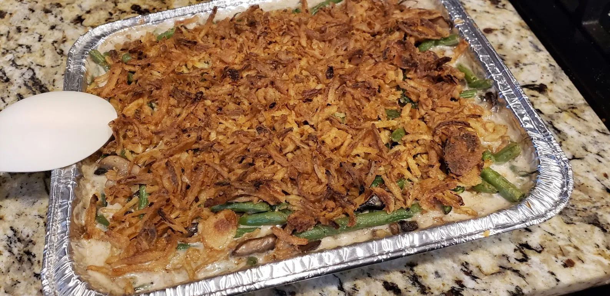

Home
Green Bean Casserole

Ingredients
- 2 teaspoons salt
- 4 quarts water
- 2 pounds green beans, ends trimmed and halved
- 3 tablespoons butter
- 1 pound white mushrooms
- 3 cloves garlic, minced finely
- Salt and pepper to taste
- 5 tablespoons flour
- 1&1/2 cups chicken broth
- 1&1/2-2 cups heavy cream
- 1 container of French Fried Onions
Method
- Preheat oven to 425 degrees Fahrenheit.
- Fill a large bowl with water, add salt, bring to a boil. Add green beans and cook until bright green and crisp tender (about 6 min).
- Run green beans under cold water. Drain well.
- Add butter to pot, then melt over medium high heat. Add mushrooms, garlic, salt and pepper. Cook for about 6 min.
- Add flour and cook about 1 min.
- Stir in broth and bring to a boil, stirring constantly.
- Add cream and reduce heat to medium low.
- Simmer until sauce thickened (about 15 min). Add salt and pepper to taste.
- Add cooked green beans and stir. Spray a 9x13 baking dish with cooking spray. Add green beans to dish.
- Bake for 10 min. Remove from oven, add crispy onions, then bake 5-7 more min.